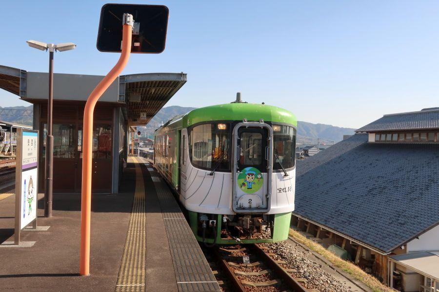

雄大な太平洋を存分に楽しむことができるローカル線・前編 < ごめん・なはり線 / 高知県東部 >
21世紀になって開通した 土佐くろしお鉄道阿佐線、通称 ごめん・なはり線。
「Rapid EXP.」 →快速列車
地方では 特急料金が必要な優等列車の運行は よくありますが、速達料金不要の快速列車が運転されているのは珍しい。
JRが定義する快速は、競合する私鉄対策の意味合いが強いからです。ごめん・なはり線には、鉄道での競合は存在しません。
また、地方ローカル線では 「20km/h制限」
と言った、山間部等で極端な徐行運転が見られますが、これには安全対策はもちろん 保守管理費用軽減の意味合いがある。
つまり、スピードを出すと それだけ線路に負担がかかるので、点検にお金がいるという事。
ごめん・なはり線は 国鉄(日本鉄道建設公団)が、高知から室戸岬経由で徳島を目指しつつ、高速運転が可能な設計で建設工事を進めた路線なので、地方の鉄道としては かなりの高規格仕様。
いわば "国鉄の置き土産" が、ローカル線では珍しい高速運転を可能にしています。
今回、同線の拠点となる安芸駅から JRの接続駅である後免駅まで乗車することにしました。
ごめん・なはり線は、路線中二十駅全てに 駅独自のキャラクターが設定されているのが特徴。
原作は アンパンマンでお馴染み、高知県出身の漫画家・やなせたかし さん。彼の創造したキャラクターは ごめん・なはり線に限らず、高知県内の様々な場所で見ることができます。
安芸駅・あき うたこちゃん
安芸駅のキャラクターは 「あき うたこちゃん」
原案は 安芸市出身の作曲家・弘田龍太郎(ひろたりゅうたろう)さん。
「浜千鳥」 「春よ来い」 「雀の学校」他多数
昔 学校などで習い 口ずさんだ童謡作品を、数多く作曲されています。

列車がやってきました。
縦に入った縞(しま)は、土佐沖に生息する "クジラ" の腹模様がモチーフ。列車全体が鯨という設定です。
列車名は "しんたろう号"
終点の奈半利駅の近く。北川村出身で坂本龍馬の盟友・中岡慎太郎(なかおかしんたろう)の名前から取られています。
二両あるくじら列車のもう一方(青)は "やたろう号"
ここ 安芸駅近く出身、日本を代表する財閥・三菱グループを築いた 岩崎弥太郎(いわさきやたろう) に由来します。
※ 列車名を冠せず運行される場合もあります
駅名標には必ず 駅キャラクターを添えて。ごめん・なはり線のこだわりです。
球場前駅・球場 ボール君
安芸駅から一駅走ると、球場前駅に到着。
キャラクターは "球場ボール君"
安芸市街地の西端ですが、かつて運行されていた 土佐電鉄安芸線の安芸駅は、この付近にありました。
駅名の通り 大きな野球場があり、ここではプロ野球・阪神タイガースの秋季・春季キャンプのほか、ウエスタンリーグの公式戦が 年間数試合行われています。
かつて行われていた 一軍春季キャンプですが、平成23年(2011)を最後に撤退。高知県・安芸市全体が大きく落胆したのは、記憶に新しいところ。
事情は様々あるところでしょうが、以前は オリックスや西武が高知県内で春季キャンプを行っていたものの 先に別の場所に移り、高知県でキャンプを行うのは 阪神タイガースだけになっていました。
練習試合の相手確保等に支障をきたしていたことが、理由の一つとして考えられます。
穴内駅・あなない ナスビさん
安芸市市街地を離れ、穴内駅は "あなない ナスビさん"
温暖な気候とビニールハウスを生かして栽培される 安芸市のナスは、冬春ナスとしては出荷量日本一を誇ります。
市内では ナスのステーキや、焼きナスのアイスと言った変わり種まで、特産品のナスビを生かしたグルメを楽しむことができます。
風を感じるオープンデッキ
穴内駅を過ぎた列車は 直線区間に入ります。
高架橋によりできるだけ高低差を無くし、カーブを減らすために トンネルで一直線。
高規格路線を 随所で感じることができます。
くじら列車 「しんたろう号 / やたろう号」 の大きな特徴に、
"オープンデッキ"
があります。

車両の海側が半屋外になっていて、雄大な太平洋の景色を肌で風を感じることができる構造になっています。
列車運行中は この通り。
高架 ＝ 視点が高いことも相まって、遮るものが無い 圧倒的な風景を目にすることができます。
ごめん・なはり線のハイライトシーン・琴ヶ浜(ことがはま)
赤野(あかの カモメちゃん)
和食(わじき カッパ君)
西分(にしぶん つきこちゃん)
長大な浜ゆえ、駅が三つ置かれています。
和食駅・わじき カッパ君
和食駅 "わじき カッパ君"
高知県に数多く存在する河童伝説ですが、こちらの駅付近を流れる和食川(わじきがわ)にも カッパ話があり、カッパ公園と名付けられています。
琴ヶ浜の中間どころに位置する駅。海側の景色は どこまでいっても雄大です。
オープンデッキを楽しむ際は、気を付けてお楽しみください。
安芸駅
< 自家用車 >
高松駅から 約2時間30分、151km
高知龍馬空港から 約40分、25km
< 公共交通機関 >
土佐くろしお鉄道 安芸駅下車
※ 主な地点からの最速・最短距離
続き
2019,1/7 雄大な太平洋を存分に楽しむことができるローカル線・後編 < ごめん・なはり線 / 高知県東部 >
関連記事
2017,12/7 高知龍馬空港近く、かつての海軍基地の遺構 < 前浜掩体壕群 / 高知県 > →立田駅
2017,12/13 四国にもあった特攻部隊 < 白菊隊 / 高知・徳島> →立田駅
2018,3/19 新旧が混在する土佐藩ゆかりの港 < 手結港 / 高知県 > →夜須駅
2018,12/8 ユニークな駅名の高知県の鉄道交通中心地 < 後免駅 / 高知県南国市 > →後免駅
2018,12/14 あだ名は無人島。太平洋一人ぼっちを経験した漂流民 < 無人島長平 / 高知県香南市香我美町岸本 > →香我美駅
2018,12/20 終戦翌日の爆発事故。震洋隊の悲劇 < 震洋隊 / 高知県香南市夜須町 > →西分駅・夜須駅
2018,12/26 国の将来を憂い殉じた二十三名の志士たちの墓所 < 二十三士墓所・福田寺 / 高知県田野町 > →田野駅